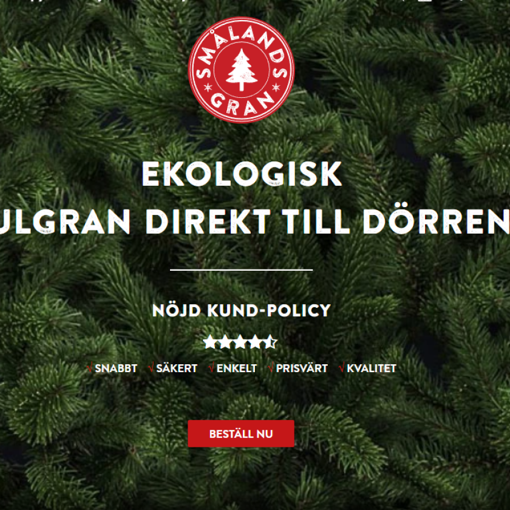

Hållbar Jul: Välj en Miljövänlig Julgran från Smålandsgran
I en tid då miljömedvetenhet blir allt viktigare, är valet av en hållbar julgran ett utmärkt sätt att bidra till en grönare jul. Smålandsgran står i framkanten när det gäller att erbjuda miljövänliga och hållbara julgranar. I det här inlägget utforskar vi hur du kan bidra till en mer hållbar jul genom att välja en gran från Smålandsgran.

Smålandsgrans Dedikation till Hållbarhet och Miljövänliga Julgranar
Smålandsgran har ett djupt engagemang för hållbarhet och strävar efter att erbjuda sina kunder miljövänliga julgranar. Deras filosofi går utöver att bara erbjuda vackra julgranar; de vill också säkerställa att deras produkter är bra för både planeten och människornas hälsa. Genom att välja Smålandsgran tar kunderna ett steg mot en mer hållbar och miljömedveten jul.
Ekologiskt Odlade Julgranar för en Grönare Jul
Ett av de mest framträdande initiativen från Smålandsgran är deras utbud av ekologiskt odlade granar. Dessa granar odlas med stor hänsyn till miljön, vilket innebär att de växer utan användning av skadliga kemikalier som bekämpningsmedel och konstgödsel. Detta bidrar till en bättre miljö och minskar risken för negativ påverkan på både natur och människa. Dessa julgranar erbjuder en säkrare och mer miljövänlig juldekoration för ditt hem.
Fördelarna med en Miljövänlig Julgran från Smålandsgran
Att välja en miljövänlig julgran från Smålandsgran innebär flera fördelar som sträcker sig bortom den traditionella julstämningen.
Skapa en Hälsosammare Inomhusmiljö
Genom att välja en ekologiskt odlad julgran från Smålandsgran, minskar du din och din familjs exponering för skadliga kemikalier i hemmet. Konventionella julgranar kan ofta vara behandlade med kemikalier som kan avdunsta inomhus och påverka luftkvaliteten. En ekologisk gran bidrar till en hälsosammare inomhusmiljö, vilket är särskilt viktigt under julen när familjer tillbringar mycket tid inomhus.
Stödja Hållbara Odlingsmetoder och en Grönare Framtid
Genom att köpa din julgran från Smålandsgran stöder du hållbara odlingsmetoder. Ditt val bidrar inte bara till att minska miljöpåverkan utan stödjer också en industri som är engagerad i miljövänliga praktiker. Genom att välja en ekologisk julgran blir du en del av lösningen och bidrar till en mer hållbar och grönare framtid.
Läs mer om SEO och hur det kan ge ditt företag den boost det behöver för att växa!
FAQ - Frågor om Miljövänliga Julgranar från Smålandsgran
Hur skiljer sig en ekologiskt odlad julgran från en vanlig gran?
Ekologiskt odlade granar från Smålandsgran är odlade utan kemiska bekämpningsmedel och gödsel, vilket gör dem till ett hälsosammare och mer miljövänligt alternativ.
Är miljövänliga julgranar från Smålandsgran dyrare?
Priset på de ekologiska granarna , men Smålandsgran strävar efter att hålla priserna konkurrenskraftiga och tillgängliga, samtidigt som de erbjuder högkvalitativa och hållbara produkter.
Hur bidrar mitt köp från Smålandsgran.se till miljön?
Genom ditt köp bidrar du till återplanteringsprogram och stödjer hållbara odlingsmetoder, vilket har en positiv effekt på miljön.
Kan jag återanvända eller återvinna min julgran från Smålandsgran.se?
Ja, Smålandsgran.se uppmuntrar återanvändning och återvinning av julgranar. Du kan få tips och råd om detta direkt från dem.
Vill du veta mer om hur du kan sälja din bil till Bilway, eller är du redo att få en gratis värdering? Besök vår webbplats eller kontakta oss direkt. Vi är här för att göra din bilförsäljning så enkel och lönsam som möjligt.